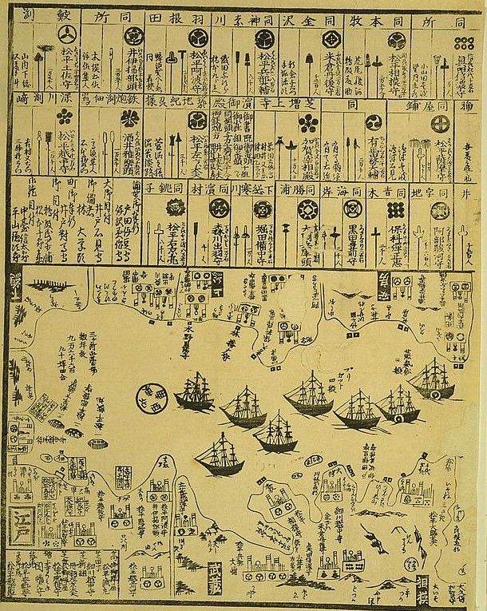
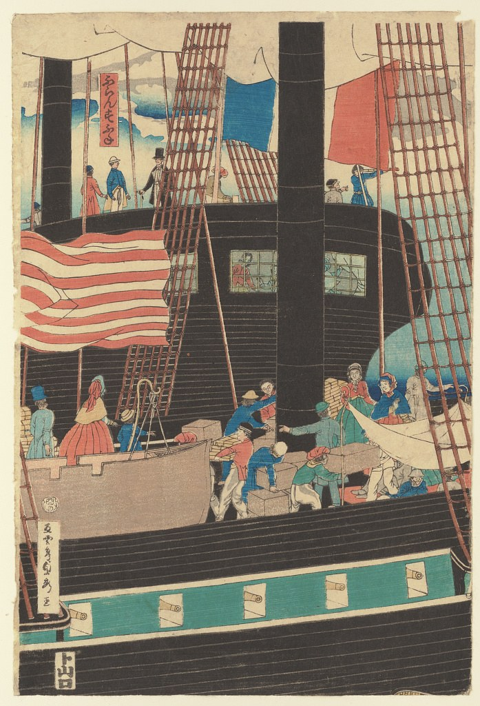
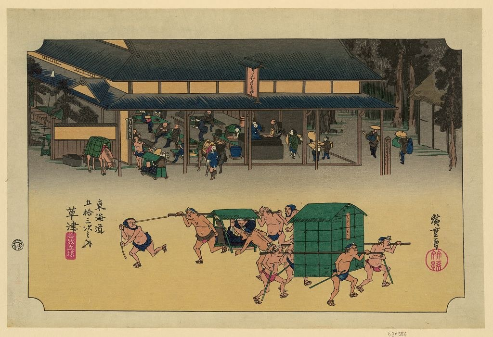
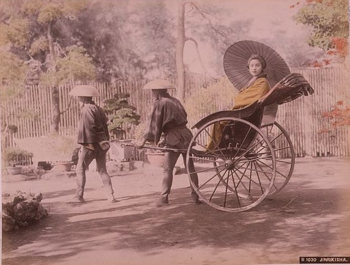
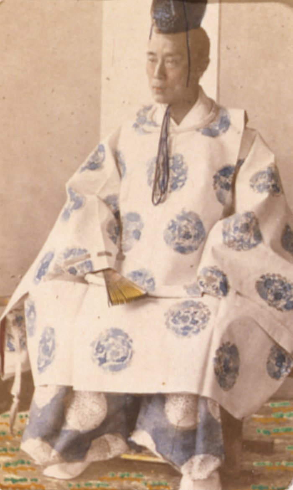

Unit 7 · Study guide · Japan
The Fall of the Tokugawa 幕末
Discontent at home, black ships offshore, and the end of military rule, 1800–1868
ContentsOverview
The unit in one paragraph
pp. 333, 345–346
In the early 1800s many Japanese commoners prospered, but the laboring poor, low-ranking samurai, and debt-ridden daimyo did not. Villages fought over their headmen, domains neared bankruptcy, and capable samurai were stuck in dead-end posts. Then came fear of the West. After Perry's ships arrived in 1853, the shogunate signed unequal treaties and, unsure of itself, asked the daimyo and the monarch for their views. That opened a public political realm it could not close. Repression (1858–1860), compromise, and the terror of the shishi followed. Satsuma and Chōshū, humbled by Western guns, built modern armies and allied against the shogunate in 1866. At the end of 1867 the last shogun returned his office to the monarch, ending nearly 800 years of military government. pp. 333, 345
- What brought about the restoration of imperial rule under the Meiji emperor?
- Was the fall of the shogunate a coup d'état, one set of rulers replacing a similar set, or a revolution?
- Was it mainly the result of changes inside Japan, or a reaction to foreign pressure?
Timeline at a glance
Trouble in the villages
pp. 333–334
The village order built in the 1600s no longer fit how people lived. Three kinds of strain stand out. pp. 333–334
Farmers accused headmen of charging their family business to the village and of lording it over neighbors, their gates and eaves marking higher status. Lawsuits dragged on for decades. Some villages rotated the post or let household heads elect it; a woman who headed a house could vote.
Outcasts, held polluted because they handled dead animals, protested humiliation and insults.
In the east, population fell and fields went to waste. Gamblers preyed on youths; bandits stole crops, goods, and women. Village officials formed regional leagues and hired unemployed swordsmen as militia. The shogunate sent patrols from 1805.
Two answers from below p. 334
The "peasant sage" revived villages by preaching diligence, fortitude, and frugality as repayment to the gods, planning land and labor rationally, and founding mutual aid associations for indebted farmers.
The Hirata school sought virtue in Japan's ancient past, revered the monarch as a manifest god, and saw farming as communion with the gods. Village officials liked it because it renewed community without threatening their own place.
Keep Hirata in mind: his preachers later carried political news across domain borders (Part 7), and his disciples rushed to serve the new government in 1868 (Part 10).
Domains in debt, samurai in limbo
pp. 334–335
Domain governments were close to bankruptcy. Farmers' protests had kept taxes flat for decades, while costs kept rising. p. 334
- 1Income stuck: farmers' protests had long since stopped tax revenue from covering costs.
- 2Costs grow: unneeded retainers on the payroll, the daimyo's family living Edo-style, and the trips to and from Edo under alternate attendance.
- 3Borrow: daimyo borrow from merchants against future taxes.
- 4Squeeze everyone: sell sword-and-surname rights to rural entrepreneurs; create monopolies; push exports and curb imports (causing shortages); issue sumptuary laws; "borrow" samurai stipends.
- 5Result: markets disrupted, status markers blurred, and samurai angry at their own lords.
Rich commoners now wore crested kimono and carried swords. Hereditary ranks kept educated, capable samurai in menial jobs. They demanded that men of talent and ability be promoted; when domains tried, upper-ranking samurai fought to keep their privileges. Satsuma raised Saigō Takamori from rural administrator to adviser in 1854. pp. 334–335
Bad harvests in the 1830s recalled the famines of the 1780s. Commoners blamed greedy merchants, turned on village leaders, and called on the gods of world renewal; women marched too. Ōshio Heihachirō, a retired shogunal policeman and student of Wang Yangming, petitioned the Osaka magistrate, sold his books to buy food, then led farmers against the city. A quarter of Osaka burned; he killed himself. p. 335
Wang Yangming taught that in a crisis a man must follow his intuition rather than bureaucratic procedure (see p. 335 and Ch. 14). Ōshio's revolt is that idea in action.
Religion and play
pp. 335–338
Commoners answered hardship and political indifference in two very different ways. p. 335
- 1838: a spirit possesses Nakayama Miki, a long-suffering farm woman, calling her the "shogun of heaven."
- She makes her family sell everything to help the poor.
- Tenrikyō: rulers are too remote; trust the god of world renewal and help one another.
- A renewed world where men and women are equal.
- Jippensha Ikku's travelogues: two irreverent commoners mock samurai, steal, seduce maids, laugh at farts.
- Kabuki ghost plays by Tsuruya Namboku; in 1850 the peasant martyr Sakura Sōgorō appears on stage.
- Ever bigger festivals; village kabuki stages; Asakusa's mix of prayer and play.
- Play itself became a way to appeal to the gods.
p. 335
Document: Kohei's Lawsuit (1849) pp. 336–337
A city court case over a master carpenter's estate shows how freely people crossed the "fixed" status lines. Everyone changed names with their occupation. Tap a card to see the other identity.
Think about it (book's questions): What are the issues in this lawsuit? What kinds of people are involved? Why is the conflict over Gisaburō's personality (his personal property), not just his possessions?
The shogunate cracks down, 1841 pp. 337–338
Prostitution had spread beyond the licensed quarters: commerce put money in customers' pockets and turned women's labor into a commodity. As part of the 1841 reform, the shogunate tried to curb what it saw as urban excess.
- Closed teahouses used for unlicensed prostitution; barred women from dressing men's hair, teaching them music, or performing on stage.
- Banned mixed public baths, gambling, lotteries, and full-body tattoos.
- Censored romances like Ryūtei Tanehiko's best-seller The False Murasaki and the Rustic Genji.
- Ordered commoners not to dress, eat, or live above their station, making examples of violators, to little effect.
Foreign ships and the closing of Japan
pp. 338–339
The textbook's key point: Japan was not truly "closed" until 1825. The 1600s policy controlled contact (Unit 3); the 1825 order rejected it outright. p. 338
| Year | Who | What happened |
|---|---|---|
| 1793 | Russia | Adam Laxman reaches Nagasaki; rebuffed because respect for its ancestors barred the shogunate from new relations. |
| 1798 | Japan | Expedition to Hokkaido; the shogunate decides to annex Hokkaido and Sakhalin but lacks an army to defend them. |
| 1804–07 | Russia | Asks again to trade at Nagasaki; when refused, officers attack posts on Sakhalin and the Kurils. |
| 1808 | Britain | Warship Phaeton barges into Nagasaki bay hunting Dutch ships and leaves with supplies. |
| 1811–13 | Russia | Captain Vasilii Golovnin held at Hakodate for two years. |
| 1824 | Britain | Whalers raid villages in Mito and in Satsuma. |
| 1825 | Japan | Order to drive off all foreign ships except the Dutch. |
| 1842 | Japan | After China's defeat in the Opium War, the order is relaxed: aid castaways and ships in need, then send them on. |
| 1846 | U.S. | Commodore James Biddle seeks trade and is refused. |
Aizawa Seishisai's New Theses (1825) p. 338
The decision to close the country also came from what scholars learned. The head of the shogunate's translation bureau (founded 1811) warned that Christianity could subvert "the gullible masses." Aizawa, adviser to Tokugawa Nariaki of Mito, had read about the West and questioned the British sailors who landed in 1824. His New Theses built on Mito school ideas:
- 1Beware foreigners even if they say they only want trade.
- 2Trade drains precious metals, and the taste for novelty and luxury erodes moral fiber.
- 3Worse, traders bring Christianity, to turn commoners against their rulers and "conquer from within."
- 4So reform the army, let daimyo recruit farmers as soldiers, and teach the masses Japan's kokutai.
Defense, domain by domain pp. 338–339
Mito and Saga built reverberatory furnaces to cast cannon; southwestern tozama bought mortars and field guns at Nagasaki, ignoring limits on guns. Militias manned lookouts. But domains defended their own land, not "Japan," and would not share warning systems. Coastal defense isolated them and weakened the shogun.
Alarmed by Britain's victory over China, the 1841–42 reform trained a small unit in modern guns, tried to end domain monopolies, transfer daimyo, and outlaw domain coins and paper money. In 1843 the shogun made the daimyo supply a 150,000-man escort for his pilgrimage to his ancestors' shrine at Nikkō.
Perry, Harris, and the unequal treaties
pp. 339–340; Connections, p. 309 · covered regionally in Unit 5
On July 8, 1853, Commodore Matthew C. Perry sailed four ships into Edo Bay. The Dutch had warned the shogunate he was coming. Perry ignored the exclusion order and would not move until officials accepted President Millard Fillmore's letter to the monarch. He paraded his men, opened his gunports, and promised to return. p. 339
He came back in 1854 with six ships. Intimidated, the shogunate signed a friendship treaty, the Treaty of Kanagawa. Perry's gifts showed off the Industrial Revolution: a Morse telegraph and a quarter-size steam locomotive with track. Crowds flocked to see the black ships. pp. 339, 309
The shogunate chose tiny Shimoda for the American consul to keep him isolated (Map 19.1). Townsend Harris arrived in 1856, bullied officials into talks in Edo, and, pointing to the gunboats that had devastated China's coast, got his commercial treaty in 1858. p. 339

| Friendship treaty (Kanagawa), 1854 | Commercial treaty (Harris), 1858 | |
|---|---|---|
| Ports | Shimoda and Hakodate, for coal and supplies | Six cities opened to foreign residence and trade (treaty ports) |
| Officials | A U.S. consul at Shimoda | Exchange of diplomatic representatives |
| Trade | None beyond supplies | Low tariffs on imports; steep U.S. tariffs on Japanese exports |
| Law | Fair treatment of shipwrecked sailors | Extraterritoriality for foreigners |
| Other powers | Most favored nation treatment for the U.S. | Similar treaties with the Netherlands, Britain, France, Russia |

Why the treaties were "unequal" pp. 339, 345
Japan made the concessions, and foreigners gained rights that Japanese did not have abroad. The textbook's summary is that the shogunate left Meiji a set of treaties that opened Japan to trade, "though not on terms favorable to Japan." p. 346
Yokohama opened as a treaty port in 1859. Artists like Sadahide made a new kind of print showing the foreigners, their ships, and their goods (Figure 5). Within months, the port became the target of shishi violence (Part 9) and the site of a gold rush (Part 10). pp. 342–343
Japan in turmoil, on one map
Map 19.1 (p. 339) and pp. 338–345
Step through the layers to see where each stage of the crisis struck. Tap a marker for a note. The layers advance on their own once the map is in view.
Debating the foreign threat
pp. 339–341
Unnerved by the responsibility, the shogunate ended its 250-year monopoly on foreign policy. In 1854 it asked the leading daimyo for their opinions; in 1858 it asked the monarch Kōmei to approve the Harris treaty. Neither produced agreement. Kōmei rejected the treaty, told the shogun to consult the daimyo, and demanded the foreigners' expulsion. When the shogunate signed anyway, many called it treason. pp. 339–340
Strengthen Japan by acquiring Western military technology and fusing Western science with Japan's Confucian ethics. Only trade brings the knowledge and tools to compete.
Adviser to daimyo who popularized fukoku kyōhei, "rich country, strong army."
Both were killed by anti-foreign assassins.
Trade would cost Japan precious metals for trifles and infect it with Christianity. Only fighting, even a hopeless fight, could revive its martial spirit.
Taught military science in Chōshū; from 1854 ran a school teaching sonnō jōi. Furious that the "spineless" treaties made Japan look weak.
The news spreads p. 340
The same networks that once carried news about farming methods and rice prices now carried politics, creating a public political realm.
- Doctors, merchants, and samurai in Edo wrote to friends in the countryside about Perry; readers copied the letters into diaries to discuss with neighbors.
- Hirata preachers and swordsmanship teachers linked people across domain borders.
- Kawaraban broadsheets sold gossip about the treaty talks.
- A few commoners sent coastal defense plans to their daimyo for the shogun, and traveled to Edo and Kyoto to see the changes for themselves.
From palanquin to rickshaw
p. 341
Before railroads, most travelers walked. Up at 4:00 a.m. on straw sandals, they covered about thirty miles a day. Horses mostly carried packs, and boats on the Inland Sea and Lake Biwa had a name for capsizing. p. 341


Most travelers sat on a cushion in a wicker basket, gripping a strap. Rural entrepreneurs carried brides in enclosed palanquins; in cities these were for daimyo and high-ranking samurai only. Even the vehicle marked status.
Invented in 1869 by Izumi Yōsuke, a Tokyo restaurateur, to replace horse-drawn coaches with human power. Cheap, easy to make and repair, and nonpolluting, but brutal on its pullers. It spread from Japan to China and the rest of Asia.
Political turmoil, 1858–1864
pp. 342–343
Kōmei's rejection of the treaty and a fight over the next shogun paralyzed the shogunate. What followed swung from repression to compromise to terror. p. 342
- 1Succession fight, 1858. Satsuma, Mito, and other activist daimyo, with Kōmei, back Nariaki's capable son Hitotsubashi Yoshinobu. The senior councilors refuse interference and choose Tokugawa Iemochi, closer by blood.
- 2Repression. The vassal daimyo Ii Naosuke becomes regent. In the Ansei Purge he silences opposing daimyo and arrests, exiles, or executes over a hundred of their agents; Yoshida Shōin is executed in 1859.
- 3Assassination, 1860. On a snowy morning in the third month, young samurai from Mito and Satsuma kill Ii outside Edo castle (at the Sakurada Gate†). They brand him a traitor for executing shishi. Worse for the shogunate, tozama Satsuma and Tokugawa Mito have now worked together.
- 4Compromise. Kōbu gattai: tozama and Tokugawa relatives advise on foreign affairs, purged daimyo return, Iemochi weds Kōmei's half-sister Kazunomiya, and the shogunate promises to expel the barbarians.
- 5Reform, 1862†. "Able" daimyo push for men of talent, Western technology, and stronger defense. To pay for it, the shogunate cuts costs and eases alternate attendance to 100 days every three years; women and servants leave Edo, the only city they had known.
- 6Terror. Shishi attack foreigners in Yokohama from 1859 and kill advisers in Kyoto after the marriage. In the eighth month of 1863 they try to seize the palace to put Kōmei at the head of an army; Satsuma and the shogun drive them out. Uprisings in Yamato and at Ikuno are crushed, Mito falls into civil war, and in the seventh month of 1864 Chōshū's shishi are routed in Kyoto.
Kusaka Genzui, radical samurai (1840–1864)
- 1840 Born in Chōshū, the year of the Opium War, into a low-ranking family of doctors, and trained to be one.
- Age 17 Enters Yoshida Shōin's academy; is soon sent to Edo, so short of funds that he "never" visits courtesans.
- 1859 After Yoshida's execution, leads the academy and travels to Kyoto, sometimes without permission, meeting activists from other domains.
- 1862 Under house confinement, writes his key works: confine foreigners to three ports, let Japanese travel abroad, replace the shogun with the emperor but keep the domains, and give posts to capable men regardless of birth.
- 1864 Counsels patience as Chōshū's units march on Kyoto, but joins his friends. Wounded by rifle fire under the monarch's walls, he kills himself, becoming a hero for fighting a battle he knew he could not win.
Think about it (book's questions): How did Kusaka explain and justify his attacks on established institutions? Did he die a meaningful death?
They changed opinion more than policy: they made the monarchy visible and broke the shogun–court alliance. But 60 percent of the people could not read, and most commoners stayed bystanders. The textbook adds that most daimyo and samurai did nothing either, out of loyalty, self-interest, or factional gridlock. Rural entrepreneurs, who supplied traveling shishi, enrolled tenants in militias, and funded one side or the other, mattered more than most samurai.
The fall of the shogunate, 1864–1867
pp. 343–346
The radicals meet Western guns pp. 343–344
When Satsuma refused to hand over the men who had killed a British merchant and to pay an indemnity, British ships bombarded Kagoshima in the seventh month. Despite its military reforms, Satsuma was no match; in the eleventh month it accepted Britain's demands.
Obeying Kōmei's decree to expel the barbarians, Chōshū gunners fired on foreign ships at Shimonoseki in the fifth month of 1863. Over a year later the foreigners struck back; days earlier the shogunate had branded Chōshū an enemy of the court and massed daimyo troops at its border. Chōshū apologized, expelled radical nobles, and executed three officials.
Trade turns the economy upside down p. 344
From 1859, foreign merchants at Nagasaki and Yokohama found that silver bought three times as much gold in Japan as in the West. Figure 11 shows the trade they ran.
- Daimyo were allowed to mint money; counterfeiters flooded the market; inflation soared.
- Foreigners bought tea and silk for weapons; rice paddies turned to cash crops.
- Weavers lost work, outbid by foreigners for silk thread.
Unemployment, crop failures, inflation, and the shogunate's taxes on trade set off the most widespread riots of the Edo period, worst in the shogun's own stronghold of eastern Japan.
The shogunate strikes back pp. 344–345
The shogunate planned to fund military modernization with taxes on foreign trade. It imported thousands of weapons through Yokohama and drilled its retainers and farmer recruits in rifle companies. It sent missions abroad (1860, to sign a friendship treaty with the U.S.; later to study technology), opened a naval school at Hyōgo (1861), an ironworks at Yokohama, and a shipyard at Yokosuka (1865). It also won Kōmei's approval for the treaties, while keeping the tozama out of policymaking. p. 344
But by reasserting itself it upset its balance with the daimyo and pushed old enemies together. The last shogun, Hitotsubashi Yoshinobu, reigned less than a year (Figure 12). p. 345

Countdown to the end pp. 345–346
Facing a second shogunal campaign, Chōshū and Satsuma ally. Both have bought arms at Nagasaki and built Western-style armies.
Few domains answer the shogun's call; riots in Edo and Osaka tie down troops; the attack on Chōshū ends in humiliation. Iemochi's death gives a face-saving way out.
The shogunate loses its strongest supporter at court: Kōmei had backed a division of power that left government to the shogun.
Ee ja nai ka sweeps the Pacific coast. The court secretly orders Satsuma and Chōshū to overthrow the Tokugawa.
Yoshinobu returns his patent of office to the monarch, ending nearly 800 years of military regimes.
Declared a traitor, Yoshinobu loses rank and lands. His forces lose after four days near Kyoto; Aizu falls in the ninth month; Hakodate holds out until mid-1869.
In the name of the fifteen-year-old Meiji emperor, Sat-chō leaders abolished the offices of shogun and regent and created advisory posts open to daimyo, court nobles, and "men of talent." The imperial armies, short of cash, had to demand loans from wealthy commoners as they moved north. pp. 345–346
Officials and public alike feared a long civil war would give foreign troops an excuse to invade, so uniting around the emperor seemed better. Yoshinobu and the daimyo of Aizu survived to join the new peerage. Hirata disciples rushed to serve; Edo watched its old masters replaced. p. 345
Coup or revolution?
pp. 333, 342–343, 346; Ch. 20, p. 362
The chapter opens with two linked debates. Use the evidence on each side when you write about the Restoration.
Historians who say 1868 cannot be a "revolution from below" because commoners stayed on the sidelines overlook that most of the ruling class also did nothing. Weigh both kinds of inaction.
Japan in 1800 vs. 1868
pp. 345–346
1800
- A 1600s order of fixed status and place.
- The shogun alone handles foreign affairs.
- Foreign contact limited to managed points.
- The monarch removed from politics.
1868
- Commerce, travel, and news networks have worn down status and regional divisions.
- A public political realm has drawn in many outside the government.
- Unequal treaties have opened Japan to trade.
- A new regime rules in the emperor's name.
A dynamic economy, a pool of able administrators, a population well educated for its time, and a set of treaties that opened Japan to trade on unfavorable terms. Unit 8 picks up from here.
Test yourself
Flashcards
Who's who
| Person | Why they matter |
|---|---|
| Ninomiya Sontoku | Peasant sage; revived villages through frugality, planning, and mutual aid |
| Hirata Atsutane | Scholar of Japan's ancient past; the monarch as a manifest god |
| Ōshio Heihachirō | Retired policeman; led farmers against Osaka in 1837 |
| Nakayama Miki | Farm woman possessed by a spirit in 1838; Tenrikyō |
| Aizawa Seishisai | Mito scholar; New Theses (1825), kokutai |
| Tokugawa Nariaki | Anti-foreign lord of Mito; father of Yoshinobu |
| Matthew C. Perry | U.S. commodore; Edo Bay 1853, friendship treaty 1854 |
| Townsend Harris | First U.S. consul (Shimoda, 1856); commercial treaty 1858 |
| Kōmei | Monarch who rejected the Harris treaty; backed shared power; died 1866–67 |
| Sakuma Shōzan · Yokoi Shōnan | Advocates of Western technology and trade; assassinated |
| Yoshida Shōin | Chōshū teacher of sonnō jōi; executed 1859 |
| Ii Naosuke | Regent who signed and purged; assassinated 1860 |
| Tokugawa Iemochi | Shogun from 1858; married Kazunomiya; died 1866 |
| Kusaka Genzui | Chōshū shishi; died in Kyoto, 1864 |
| Saigō Takamori | Satsuma samurai promoted for talent (1854) |
| Hitotsubashi Yoshinobu | Last shogun; returned his office in 1867 |
| Meiji emperor | Kōmei's son, fifteen in 1868; in whose name Sat-chō ruled |
Key dates
| 1793 · 1808 | Laxman at Nagasaki · the Phaeton incident |
| 1825 | Order to drive off foreign ships; New Theses |
| 1837 | Ōshio's uprising in Osaka |
| 1838 | Nakayama Miki's possession (Tenrikyō) |
| 1841–1843 | Shogunal reform; Nikkō pilgrimage |
| 1853 · 1854 | Perry arrives · friendship treaty |
| 1856 | Harris at Shimoda |
| 1858 | Harris treaty; Ii becomes regent; purge |
| 1859 | Yokohama opens; gold rush; Yoshida executed |
| 1860 | Ii assassinated |
| 1862† | Alternate attendance relaxed |
| 1863 | Kagoshima shelled; Shimonoseki firing; palace plot foiled |
| 1864 | Chōshū routed in Kyoto; Kusaka dies |
| 1866 | Sat-chō alliance; failed campaign; riots; Iemochi dies |
| 1867 | Ee ja nai ka; Yoshinobu returns his office |
| 1868 · 1869 | Restoration; Aizu falls · Hakodate surrenders |
Discussion questions
Open each for points the reading gives you to work with.
Was the shogunate's fall mainly the work of domestic change or foreign pressure?
- Domestic: headman disputes, domain debt, samurai frustration, 1830s famines (pp. 333–335).
- Foreign: Perry and Harris, the consultation of 1854 and 1858, the trade shocks (pp. 339–344).
- Linked: the domains' military reforms began as coastal defense (p. 338).
Why did asking for advice weaken the shogunate so badly?
- It ended a 250-year monopoly and produced no consensus (pp. 339–340).
- Kōmei's refusal made signing look like treason.
- It created a public political realm the shogunate could not shut down (p. 340).
Were the opponents of the treaties irrational?
What does Kohei's lawsuit reveal about the Tokugawa status order?
- Names, and so identities, changed with occupation (pp. 336–337).
- Carpenters, tavern keepers, bathhouse managers, and guards in one family.
- Commoners lent money to a great lord's household.
Did Kusaka Genzui die a meaningful death?
- His proposals of 1862: what did he want to keep, and what to change (p. 343)?
- Why did later young men see him as a hero?
- Did the shishi change policy, or only opinion (p. 342)?
Who mattered more in 1868: samurai or rural entrepreneurs?
- Most samurai stayed loyal and passive (p. 343).
- Rural entrepreneurs supplied shishi, raised militias, and funded both sides; the imperial armies needed their loans (pp. 343, 345).
Why did Japan's domains build modern armies faster than the Qing state?
- Satsuma and Chōshū each acted on their own after being defeated (pp. 343–345).
- Compare Zeng Guofan's regional army and Self-Strengthening in Unit 6.
- Recall the textbook's warning about China's size and multiethnic empire (p. 330).
Key terms
Click to expand
Terms are grouped by topic. Where a term depends on another, the entry says what it builds on, so read those first. Hover or tap any dotted term in the text for a quick definition, or open ✎ Key terms at the bottom right. † marks a term or fact from outside the textbook. Terms from Unit 3 are repeated briefly where you need them.
The Tokugawa order (review)
- Shogun · shogunate
- The shogun was Japan's military ruler, based at Edo; the Tokugawa family held the office from 1603. His government, the shogunate, was later called the bakufu ("tent government"). It ran foreign policy, and a council of senior councilors made its policy decisions. pp. 289–290
- Monarch · emperor
- The hereditary ruler who lived with his court in Kyoto, "above the clouds," with no say in government. The textbook calls him the monarch (Kōmei, before 1867) and uses emperor for the Meiji emperor, newly named as Japan's single ruler. pp. 288, 333, 342See also: shogun
- Daimyo · domain
- A daimyo was a lord whose domain (territory) produced over 10,000 koku of rice; there were 250 to 280. Each ran his domain as he saw fit and kept a band of samurai retainers. p. 289
- Vassal daimyo (fudai)
- Hereditary retainers of the Tokugawa who governed domains and served as the shogun's chief advisers. Senior councilors were chosen from them. p. 289Builds on: daimyo
- Outside lords (tozama)
- Daimyo who had been Ieyasu's rivals or peers. Fewer than the vassal daimyo, the largest ruled domains that worked almost like nations, but they were kept out of policymaking. Satsuma, Chōshū, and Tosa were tozama. pp. 289, 338, 342Builds on: daimyo
- Senior councilors
- Four or five vassal daimyo, rotating monthly, who made the shogunate's policy and personnel decisions and supervised the daimyo. In 1858 they insisted that choosing the next shogun was their decision alone. pp. 289, 342Builds on: vassal daimyo
- Alternate attendance (sankin kōtai)
- The system, formalized in 1635, that made each daimyo spend half his time in Edo and keep his wife and heir there as hostages. It was costly for domains. In 1862† it was cut to 100 days every three years and the families went home. pp. 290, 334, 342Builds on: daimyo
Villages and domains
- Outcasts
- People treated as polluted because their work dealt with dead animals. In the early 1800s they protested the discrimination, humiliation, and insults they faced. pp. 289, 333
- Village headman
- The leader of a village, which paid its taxes as a group. Headmen were accused of mixing their own business expenses with village costs and of lording it over neighbors. Lawsuits followed; some villages rotated or even elected the post. pp. 289, 333–334
- Regional leagues
- Alliances of village officials, a new layer between villages and rulers. Around Osaka they petitioned against trade restrictions; around Edo, headmen raised militias against gamblers and bandits. p. 334Builds on: village headman
- Mutual aid associations
- Groups started by the peasant sage Ninomiya Sontoku that lent indebted farmers money at low interest. He paired them with an ethic of diligence, fortitude, and frugality and with careful planning of land and labor. p. 334
- Hirata school
- Followers of the scholar of Japan's ancient past Hirata Atsutane. They accepted the shogun's rule but looked to the monarch as a manifest god linking divine and human worlds, believed the dead watch over their descendants, and valued farming as communion with the gods. Village officials were their main disciples; their preachers later spread political news. pp. 334, 340See also: monarch
- Rural entrepreneurs
- Wealthy commoners in the countryside. To raise their prestige they married outside the village, educated their daughters, studied Chinese and Western learning, and took up swordsmanship. In return for loans to daimyo, some won the right to wear swords and use surnames. pp. 334, 343
- Domain monopoly
- A domain's exclusive control over trade in a product. In the 1830s some domains created or tightened monopolies to raise money; Satsuma doubled its sugar profits. The shogunate tried to ban them in 1841–42. pp. 334, 339Builds on: daimyo
- Sumptuary laws†
- Laws regulating expenses by status, such as forbidding inferiors to wear silk or ornamental hairpins. Domains and the shogunate issued them to protect samurai privilege and curb spending. The textbook describes them; the term is standard in English. pp. 334, 338
- "Borrowing" stipends
- A domain's practice of cutting its samurai's pay while calling it a loan. It was the most common threat to samurai welfare; one band of guards went on strike over unpaid salaries. p. 335
- Men of talent and ability
- The call by low-ranking samurai to promote able men to decision-making posts instead of filling them by hereditary rank. Satsuma raised Saigō Takamori this way in 1854; the call returned in national reform after 1860. pp. 335, 342
- Yonaoshi (world renewal)
- The idea that gods of world renewal would save people from hardship and political indifference. Commoners called on them during the famines of the 1830s. p. 335
Religion and play
- New religions
- Faiths founded in the 1800s, often by commoners, that promised a world to come unlike the stratified, vertical order of the present, where the poor would be helped and men and women would be equal. p. 335Builds on: yonaoshi
- Tenrikyō
- The new religion begun when, in 1838, a spirit possessed the farm woman Nakayama Miki. Its "divine wisdom" (tenri) taught that shogun and daimyo were too remote to help; people should trust the god of world renewal and aid each other. p. 335Builds on: new religions
- Kabuki
- The popular theater of the cities (see Unit 3). In this period it staged ghost stories and gruesome murders, toured the countryside, and showed commoners acting by the logic of everyday life. pp. 295, 335
- 1841 reform (Tenpō reforms†)
- The shogunate's reform drive of 1841–43. It closed unlicensed prostitution, banned mixed bathing, gambling, and tattoos, censored novels, attacked domain monopolies, began Western-style military training, and relaxed the order to fire on foreign ships. Historians name it after the era, Tenpō. pp. 337–339Builds on: domain monopoly, sumptuary laws
The foreign threat
- Order to drive off foreign ships (1825)
- The shogunate's instruction that, except for Dutch ships at Nagasaki, every foreign ship be driven off without hesitation. The textbook calls it the shogunate's first truly isolationist policy. Relaxed in 1842. pp. 338–339
- Mito school
- Scholars of Mito, the domain of the shogun's relative Tokugawa Nariaki. They held that loyalty to one's lord rested on his loyalty to the monarch, and that Japan surpassed all countries, China included, because the monarch descended from the sun goddess. p. 338Builds on: monarch
- Kokutai
- Japan's unique spiritual essence. Aizawa urged that the masses be educated in it to resist "barbarian teachings." p. 338Builds on: Mito school
- New Theses (Shinron)
- Aizawa Seishisai's 1825 work. Trade would drain precious metals and corrupt morals; worse, traders brought Christianity to turn commoners against their rulers. It urged military reform, farmer-soldiers, and teaching the kokutai. It shaped later nationalist thought. p. 338Builds on: Mito school, kokutai
- Reverberatory furnace
- A furnace for melting metal to cast cannon. Mito and Saga built them in the 1830s–40s to arm coastal defenses, defying limits on castle guns. p. 338
- Kawaraban
- Broadsheets sold anonymously, mainly in cities, that reported gossip about the treaty negotiations. Travelers carried them to villages. p. 340
Treaties
- Unequal treaty
- A treaty imposed under threat of force that gave foreigners rights in Japan that Japanese did not have in their countries. Japan's began with the 1854 friendship treaty. See Unit 5. pp. 339, 345
- Treaty of Kanagawa (1854)
- The friendship treaty Perry obtained on his second visit. American ships could call at Shimoda and Hakodate for coal and supplies, shipwrecked sailors would be treated fairly, a U.S. consul could live at Shimoda, and the U.S. got most favored nation treatment. Japan made all the concessions. pp. 309, 339Builds on: unequal treaty
- Consul
- An official stationed in a foreign country to represent his government and its citizens. Townsend Harris became the first U.S. consul, at Shimoda, in 1856. p. 339
- Treaty port
- A city opened by treaty to foreign residence and trade, as in China. The Harris treaty opened six; Yokohama opened in 1859, and Nagasaki became one too. pp. 339, 342–343Builds on: unequal treaty
- Tariff
- A tax on goods crossing a border. Japan had to accept low tariffs on imports while its own exports faced steep tariffs in the United States. p. 339
- Extraterritoriality
- The privilege of foreign residents and visitors to be tried under their own country's laws, not Japan's. Granted in the 1858 treaty. pp. 309, 339Builds on: unequal treaty
- Most favored nation
- A treaty clause giving a power automatically any privilege Japan granted another power. pp. 308–309Builds on: unequal treaty
- Harris treaty (1858)
- The commercial treaty signed on July 29, 1858, after Harris pointed to China's fate. Diplomats were exchanged; six cities opened as treaty ports; Japan accepted low import tariffs and extraterritoriality. Similar treaties with the Netherlands, Britain, France, and Russia followed. Signed against the monarch's wishes. p. 339Builds on: consul, treaty port, tariff, extraterritoriality
Politics, 1858–1868
- Public political realm
- The space of open debate on national affairs that grew after the shogunate asked daimyo and the monarch for advice. People ignored laws against discussing current events and traded news by letter, diary, and broadsheet. pp. 333, 340Builds on: kawaraban
- Regent (tairō†)
- A person who governs on behalf of a ruler. In 1858 the vassal daimyo Ii Naosuke became regent for Iemochi and chief senior councilor; his title was tairō, "great elder." p. 342Builds on: senior councilors
- Ansei Purge†
- Ii Naosuke's crackdown on critics, 1858–59. He purged opposing daimyo and arrested, exiled, or executed over a hundred agents of daimyo and court nobles, including Yoshida Shōin. The name, from the era Ansei, is from outside the textbook. p. 342Builds on: regent
- Sonnō jōi
- "Revere the monarch and expel the barbarian," the slogan Yoshida Shōin taught in Chōshū from 1854. He meant that the monarch should take part in policy and foreigners must be driven off. p. 340Builds on: monarch
- Fukoku kyōhei
- "Rich country, strong army," a line from the Chinese classics that Yokoi Shōnan popularized. It stood for strengthening Japan through Western technology and trade. p. 340
- Shishi
- "Men of high purpose," the young radicals who left their domains to study swordsmanship and the ideas of Aizawa and Yoshida, and who attacked foreigners and officials in the monarch's name. More effect on public opinion than on policy. pp. 342–343Builds on: sonnō jōi
- Yamato damashii
- "Japanese spirit," which filled the shishi, who cared more for purity of purpose than for grooming. p. 342See also: shishi
- Kōbu gattai
- "Union of court and military," the shogunate's compromise after Ii's death: advisory roles on foreign affairs for important tozama and Tokugawa relatives, purged daimyo restored, and Shogun Iemochi married to Kōmei's half-sister Kazunomiya in return for a promise to expel the barbarians. p. 342Builds on: tozama, monarch, shogun
- Sat-chō alliance
- The alliance Satsuma and Chōshū formed in the first month of 1866. Both had bought arms through Nagasaki, sent men abroad, and built Western-style armies. Its forces led the new regime in 1868. pp. 345–346Builds on: tozama
- Ee ja nai ka
- "Ain't it great?": the 1867 movement in which people claimed amulets of the sun goddess had fallen from heaven and danced in the streets from the Inland Sea to Edo. In the east, dancers stoned foreigners and staged a mock funeral for the shogunate. pp. 344–345See also: yonaoshi
- Patent of office
- The formal grant by which the monarch appointed the shogun. When Yoshinobu returned it in 1867, military government ended. p. 345Builds on: shogun, monarch
- Meiji Restoration
- The "restoration" of imperial rule in 1868 in the name of the fifteen-year-old Meiji emperor. Sat-chō leaders abolished the offices of shogun and regent and created advisory posts for daimyo, court nobles, and men of talent. pp. 333, 345–346Builds on: patent of office, Sat-chō alliance
- Coup d'état vs. revolution
- A coup d'état is a seizure of power in which one set of rulers replaces another, similar set. A revolution changes the social and political order itself. Historians still debate which 1868 was. pp. 333, 343, 362
Sources and further reading
- Main text: Patricia Buckley Ebrey & Anne Walthall, Modern East Asia from 1600: A Cultural, Social, and Political History, 3rd ed. (Cengage, 2013), Ch. 19, "Japan in Turmoil (1800–1867)," pp. 333–346, including Map 19.1 (p. 339), the Documents feature "Kohei's Lawsuit" (pp. 336–337), the Material Culture feature "From Palanquin to Rickshaw" (p. 341), and the Biography of Kusaka Genzui (p. 343). Background from Ch. 17 (pp. 288–295), Connections: Western Imperialism (pp. 308–309), and Ch. 20 (p. 362).
- Outside facts (marked †): the names "Tenpō reforms," "Ansei Purge," "Sakuradamon (Sakurada Gate) Incident," and "Boshin War," and the title tairō, are standard terms; see Encyclopaedia Britannica, "Meiji Restoration", "Ii Naosuke", and "Tokugawa Yoshinobu". The term "sumptuary laws" is the usual English name for status-based spending rules. Image titles, dates, and photographers come from each image's Library of Congress catalog record.
- Explore further: MIT Visualizing Cultures, "Black Ships & Samurai: Commodore Perry and the Opening of Japan" and "Yokohama Boomtown: Foreigners in Treaty-Port Japan"; Asia for Educators (Columbia University), "The Meiji Restoration and Modernization"; Library of Congress, "Japanese Prints and Drawings" collection.
Image credits
- [Kita-Amerika gasshūkoku: Peruri to yū mono Sōshū Uraga ni torai su], ink print, Chadbourne collection: no known restrictions, Library of Congress (right panel, cropped).
- Utagawa Sadahide, Yokohama kōeki seiyōjin nimotsu unsō no zu, 1861: no known restrictions, Library of Congress (left section).
- Andō (Utagawa) Hiroshige, Kusatsu, from Tōkaidō gojūsan tsugi no uchi, 1833–36, printed later: no known restrictions, Library of Congress.
- Jinrikisha, hand-colored photograph, c. 1890: no known restrictions in the U.S., Library of Congress (cropped).
- F. W. Sutton, portrait of Tokugawa Yoshinobu, 1867–68, copy print by Felice Beato: no known restrictions in the U.S., Library of Congress (cropped from a four-portrait album page).
- Map: drawn for this course on Natural Earth land data (public domain).
Image titles and dates come from each image's catalog record, not from the textbook.